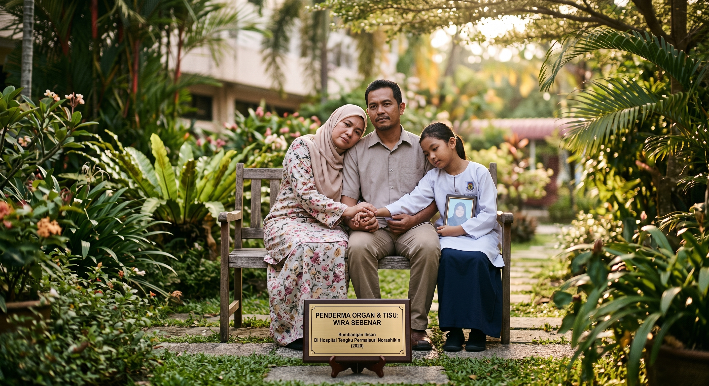

T.O.P. Touch · Sentuhan Keikhlasan
 Rujuk Kes Sekarang
Rujuk Kes Sekarang
Setiap rujukan, satu nyawa.
Setiap keputusan ikrar adalah lebih daripada sekadar langkah perubatan—ia sebuah Sentuhan Janji yang memberi peluang kedua untuk hidup. Platform T.O.P. Touch menyatukan para penderma, keluarga, dan warga perubatan dengan telus, bermartabat, dan penuh keprihatinan. Bersama-sama, kita mempermudah urusan pendermaan organ dan tisu bagi mengubah saat duka menjadi warisan hayat yang bernilai.
Menyelamatkan Nyawa. Menyempurnakan Janji. Berpaksikan Keikhlasan.
↓ Skrol
